Cytoskeleton
Microtubules are the cell’s long-distance tracks. They are built and torn down all the time, they point one way, and motor proteins walk along them carrying cargo. Today: how a microtubule is built, why it switches between growing and shrinking, how motors use ATP to walk, and what this means for neurons, cilia and cancer drugs.
After this lecture you can:
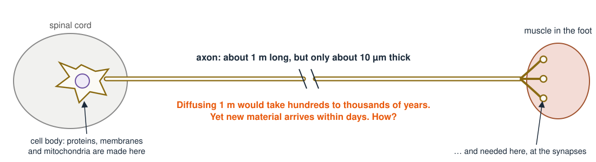
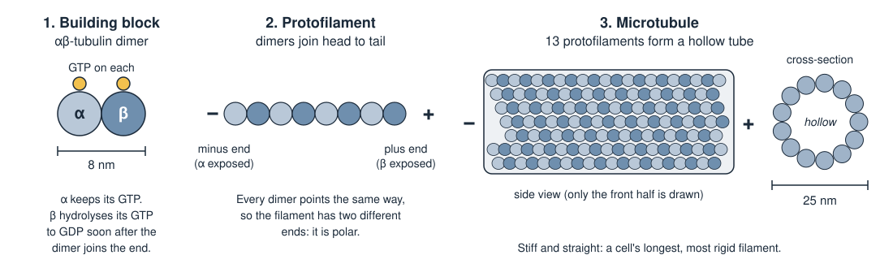
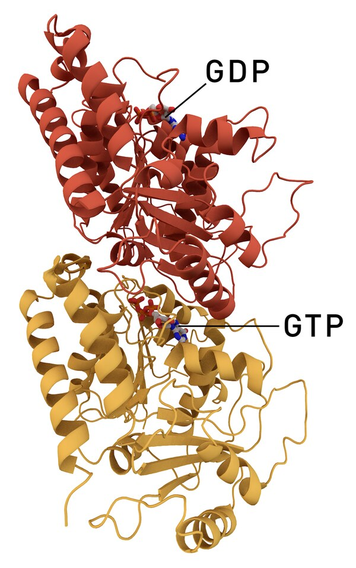
Tubulin dimer (PDB 1JFF): β (red) on top, α (gold) below.
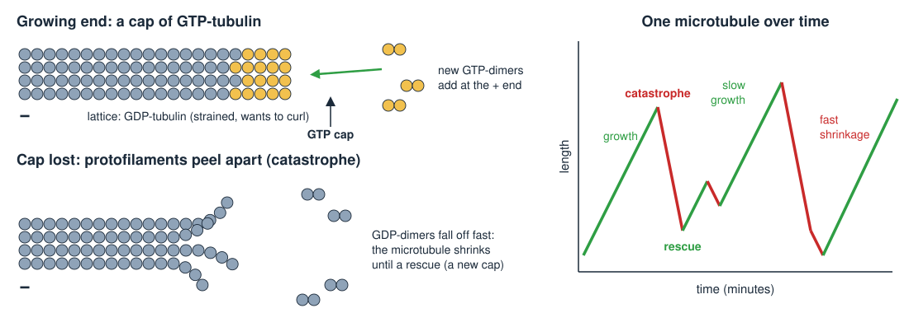
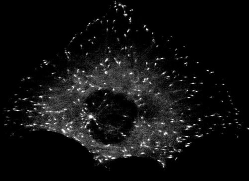
Human U2OS cell expressing EB1-GFP: each bright dash is the growing plus end of one microtubule (one frame of a time-lapse movie).
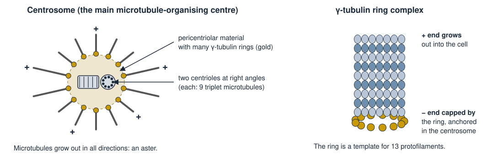
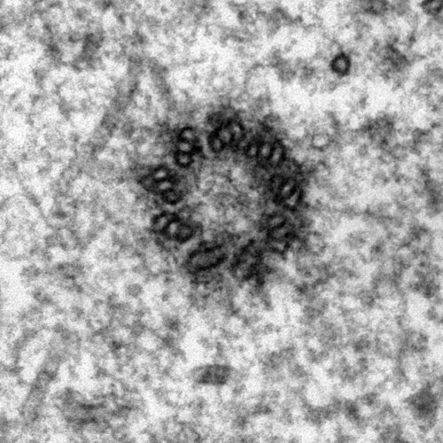
Electron micrograph of a centriole cut across (mouse embryo): nine triplet microtubules, about 0.2 µm across.
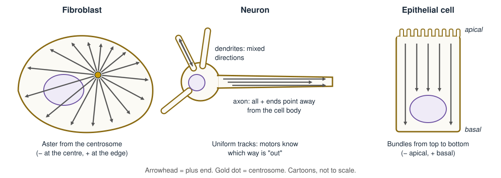
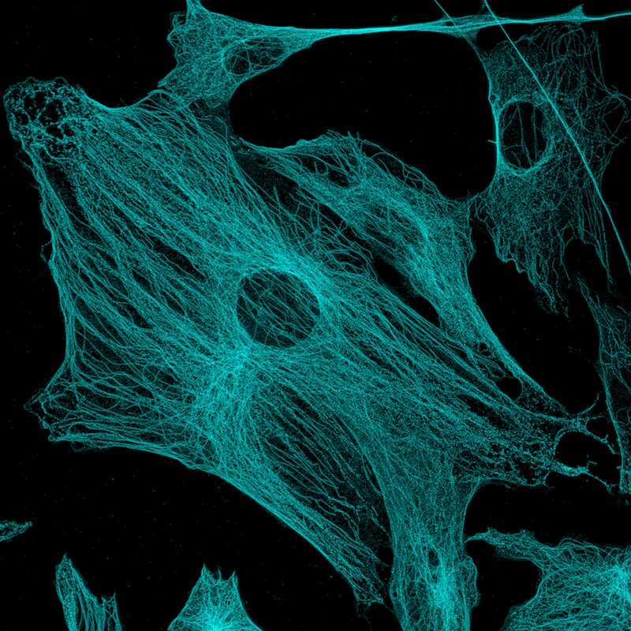
Mouse fibroblasts stained for tubulin (confocal): radial arrays around the nucleus.
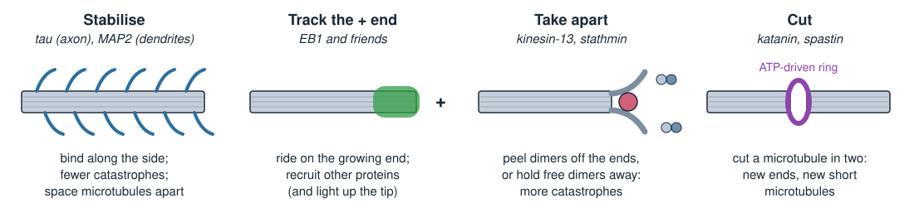
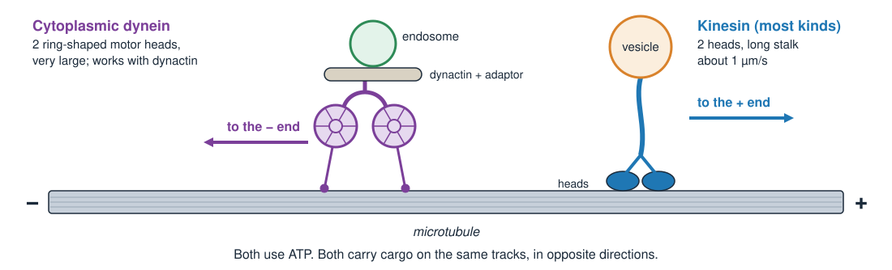
| Kinesin (most kinds) | Cytoplasmic dynein | |
|---|---|---|
| Direction | towards the plus end (outward) | towards the minus end (inward) |
| Size | two heads, ~80 nm long; ~45 kinesin genes in humans | very large (~1.4 MDa); one main form does most transport |
| Typical cargo | vesicles, mitochondria, mRNA particles | endosomes, Golgi membranes, viruses on their way to the nucleus |
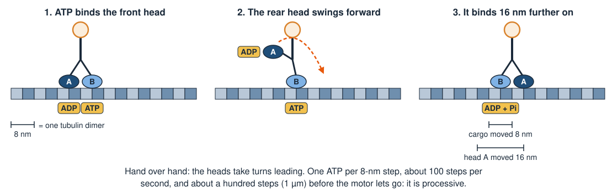
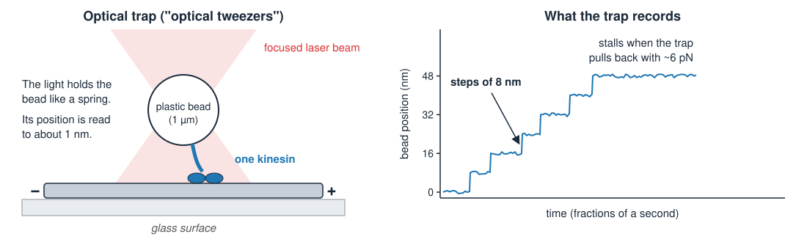
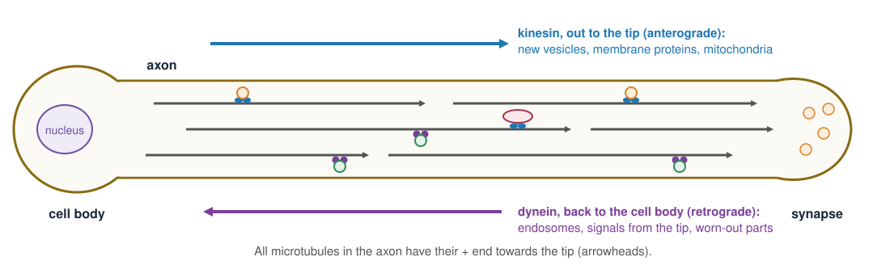
| Distance | Diffusion of a protein (t \approx x^2/2D, D ≈ 5 µm²/s) | Kinesin (t = x/v, v ≈ 1 µm/s) |
|---|---|---|
| 10 µm (a cell) | ~10 s | ~10 s |
| 1 m (an axon) | ~3000 years | ~12 days (fast transport, 2–5 µm/s: 2–6 days) |
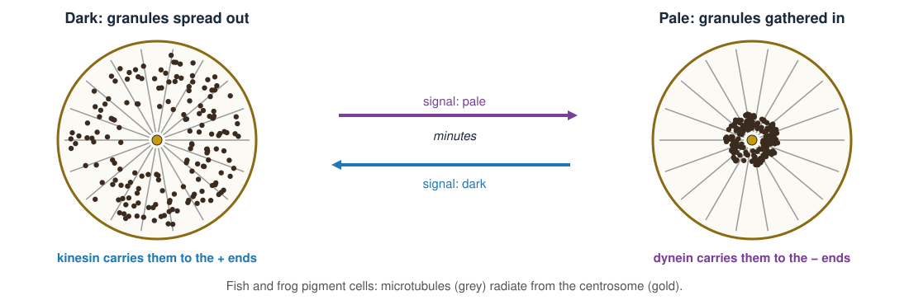
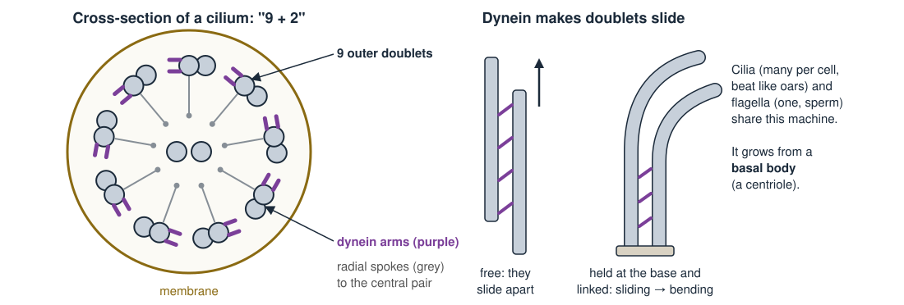
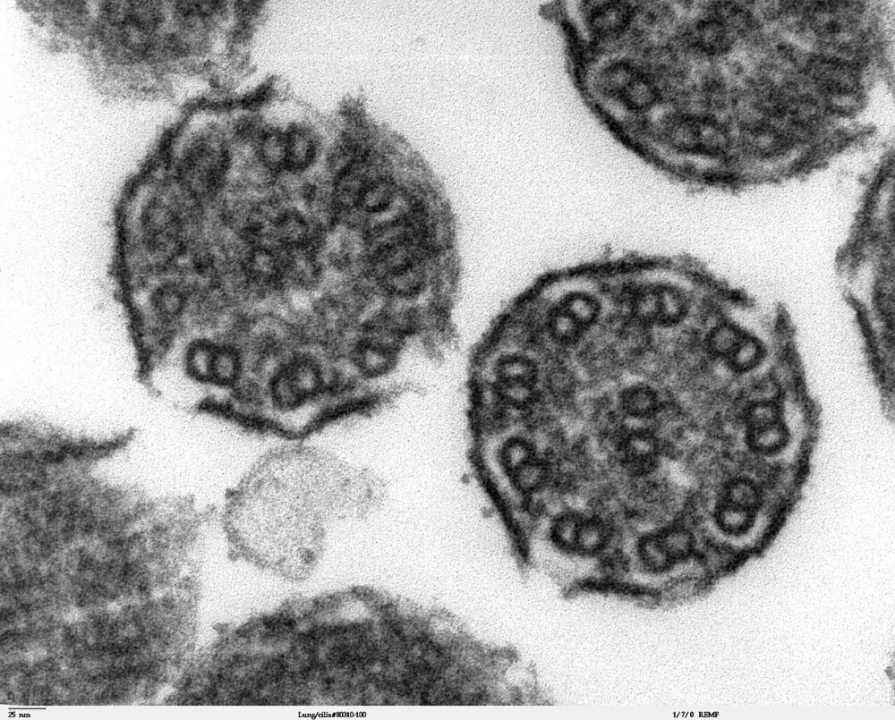
Electron micrograph of cilia cut across (mouse airway). Each shows nine doublets around a central pair.
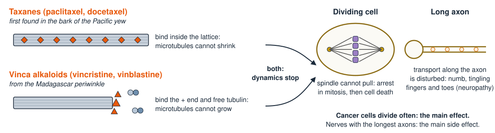
Pacific yew (left) and Madagascar periwinkle.
| Disease | What goes wrong | Link to this lecture |
|---|---|---|
| Primary ciliary dyskinesia (about 1 in 10 000–20 000) | Mutations in axonemal dynein or its partners: motile cilia do not beat | Chronic airway infections; male infertility (sperm do not swim); in about half of patients organs on the wrong side (situs inversus), because cilia in the embryo set left and right |
| Polycystic kidney disease (dominant form, about 1 in 1000) | Polycystins, sensor proteins of the primary cilium in kidney tubules | The tubules lose their sense of flow and grow into fluid-filled cysts; a common inherited cause of kidney failure |
| Neurodegeneration | Mutations in kinesin (KIF5A), dynein/dynactin or spastin (severing); tau detaches from microtubules in Alzheimer’s disease | The longest motor neurons fail first (hereditary spastic paraplegia, some forms of ALS and Charcot–Marie–Tooth disease) |
These are cell-level mechanisms only; the clinical pictures come in the course on disease mechanisms.
Read more (optional): Alberts et al., Molecular Biology of the Cell, 7th ed., ch. 16.